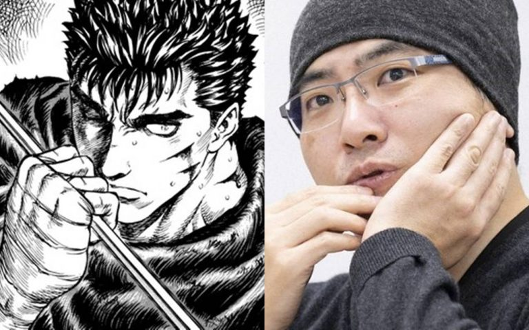
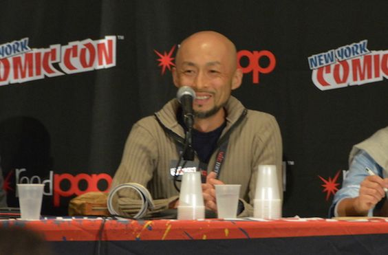
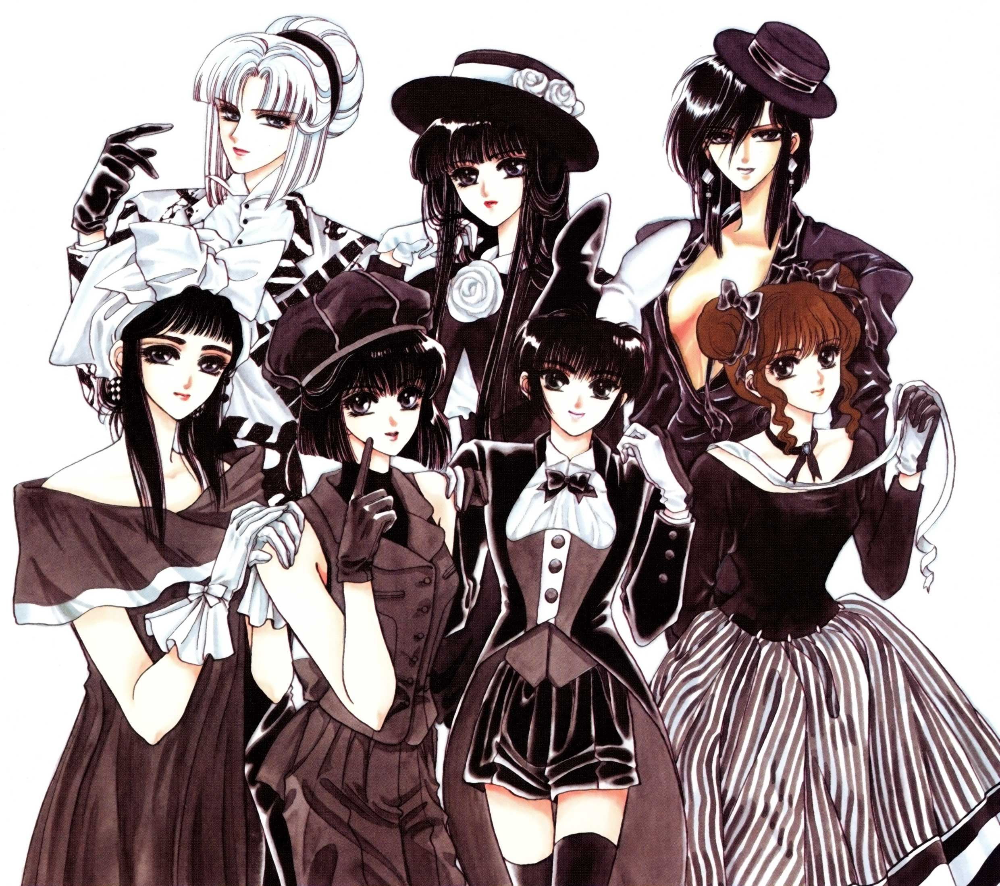
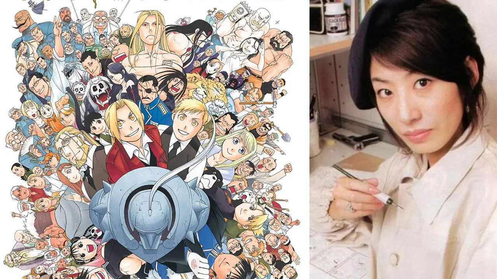
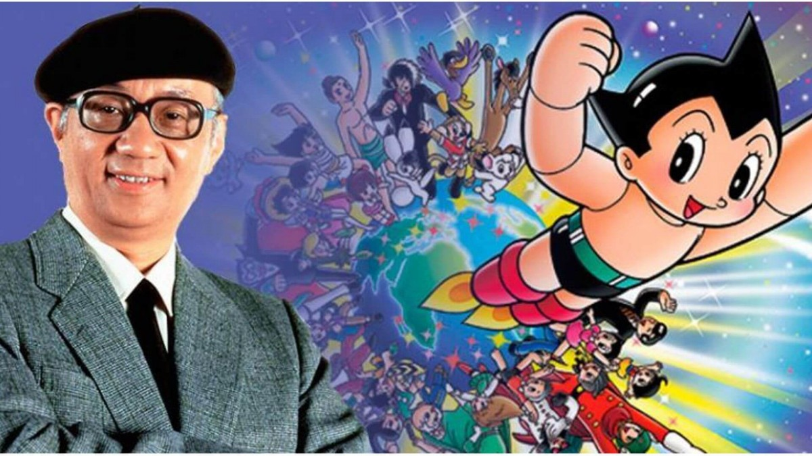

Os Principais Mangakás
>
5- Kentaro Miura – Berserk

Um mangaká canhoto… Faz Berserk com tamanha destreza, é de fazer inveja em muitos destros. Nascido em 1966. Em 1976, aos 10 anos de idade, Miura fez seu primeiro Mangá, intitulado “Miuranger”, que foi publicado para seus colegas em uma publicação da escola; o mangá terminou abrangendo 40 volumes. Pode ser considerado o mangaká mais estudado da lista, e isso pode ser tirado a prova vendo os traços de seu atual mangá, Berserk.
4. Takeshi Obata – Death Note, Bakuman

Nascido em 1969. O queridinho de mente criativa, mas somente para ilustrações, as histórias sai da mente de seu fiel parceiro, chamado Tsugumi Ohba. Essa parceria entre os dois rendeu muito! O tão aclamado Death Note saiu da mente desses dois artistas incríveis, mais tarde outro sucesso, intitulado de Bakuman, um mangá que é a cara dos dois, não a aparência, mas sim suas personalidades criativas.
3. CLAMP – Cardcaptor Sakura, xXxHolic, Clover

É um grupo de mangakás mulheres que formam a CLAMP. Fundado em 1987. Contando inicialmente com onze integrantes, o grupo reduziu seu tamanho para sete em 1990 e passou a adotar o nome CLAMP, que segundo elas significa “uma pilha de batatas”. Mas atualmente foi se reduzindo mais e mais, hoje é formado apenas por quatro mulheres: Ageha Ohkawa, Mokona, Tsubaki Nekoi e Satsuki Igarashi.
2. Hiromu Arakawa – Fullmetal Alchemist

A nossa deusa e heroína mangaká! Nascida em 1973. Hiromu Arakawa possui um auto-retrato de uma vaca de óculos… Mas isso tem um porque, mas não um porque com um “que” de loucura. Ela nasceu e foi criada em uma fazenda em Hokkaido, com três Irmãs mais velhas e um irmão mais novo. Ela trabalhou como agricultora por 8 anos antes de se mudar para Tóquio. A partir daí, depois de muito tempo de esforço, veio o tão aclamado mangá Fullmetal Alchemist.
1. Osamu Tezuka – Astroboy, Kimba

É considerado o pai dos mangás, acredite. Nascido em 1928. Osamu Tezuka é muitas vezes creditado como o “Padrinho dos Animes” e é também muitas vezes considerado equivalente a versão japonesa de Walt Disney em pessoa, que serviu como uma grande inspiração durante seus anos de aprendizado. Sua prolífica produção, técnicas pioneiras e redefinições inovadoras de gêneros, ele ganhou títulos como “the father of manga,” “the god of comics,” e “kamisama of manga”.
Menções Honrosas
Devo fazer menções honrosas de vários mangakás incríveis, que infelizmente não citei eles na lista porque não seria produtivo citar mangakás óbvios demais: Yoshihiro Togashi (YuYu Hakusho, Hunter X Hunter), Hirohiko Araki (JoJo’s Bizarre Adventure), Eiichiro Oda (One Piece), Masashi Kishimoto (Naruto), Akira Toriyama (Dragonball), Takehiko Inoue (Slam Dunk, Vagabond) e Hideaki Sorachi (Gintama).